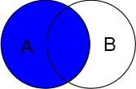

Differense between SQL JOINs is the most popular question on enterview.
So create Table a is on the left, and Table b is on the right.
Create tables
+------++------+ | a || b | +------++------+ | 1 || 1 | | 2 || 2 | | NULL || NULL | | 10 || 20 | +------++------+
Sql query:
DROP TABLE IF EXISTS `a`;
CREATE TABLE `a` (
`a` int(11) NULL
) ENGINE=InnoDB AUTO_INCREMENT=0;
INSERT INTO `a` ( `a`)
VALUES
( '1'),
( '2'),
( NULL),
( 10);
DROP TABLE IF EXISTS `b`;
CREATE TABLE `b` (
`b` int(11) NULL
) ENGINE=InnoDB AUTO_INCREMENT=0;
INSERT INTO `b` ( `b`)
VALUES
( '1'),
( '2'),
( NULL),
( 20);
INNER JOIN AND STRAIGHT_JOIN
The INNER JOIN keyword selects all rows from both tables. INNER JOIN is the same as JOIN.
A STRAIGHT_JOIN identifies and combines matching rows which are stored in two related tables. This is what an inner join also does. The difference between an inner join and a straight join is that a straight join forces MySQL to read the left table first.

SELECT * FROM a JOIN b ON a=b; SELECT * FROM b JOIN a ON b=a;
+------+------+ | a | b | +------+------+ | 1 | 1 | | 2 | 2 | +------+------+
Without condition ON we make CROSS JOIN
SELECT * FROM b JOIN a; SELECT * FROM a,b;
OR
SELECT FROM a CROSS JOIN b;

+------+------+
| b | a |
+------+------+
| 1 | 1 |
| 2 | 1 |
| NULL | 1 |
| 20 | 1 |
| 1 | 2 |
| 2 | 2 |
| NULL | 2 |
| 20 | 2 |
| 1 | NULL |
| 2 | NULL |
| NULL | NULL |
| 20 | NULL |
| 1 | 10 |
| 2 | 10 |
| NULL | 10 |
| 20 | 10 |
+------+------+
LEFT JOIN == LEFT OUTER JOIN
The LEFT JOIN keyword returns all rows from the left table (A), with the matching rows in the right table (B). The result is NULL in the right side when there is no match.
SELECT * FROM a LEFT JOIN b ON a=b;

+------+------+ | a | b | +------+------+ | 1 | 1 | | 2 | 2 | | NULL | NULL | | 10 | NULL | +------+------+
If add WHERE condition:
SELECT * FROM a LEFT JOIN b ON a=b WHERE b IS NULL;

+------+------+ | a | b | +------+------+ | NULL | NULL | | 10 | NULL | +------+------+
RIGHT JOIN = RIGHT OUTER JOIN
The RIGHT JOIN keyword returns all rows from the right table (B), with the matching rows in the left table (A). The result is NULL in the left side when there is no match.
SELECT * FROM a RIGHT JOIN b ON a=b

+------+------+ | a | b | +------+------+ | 1 | 1 | | 2 | 2 | | NULL | NULL | | NULL | 20 | +------+------+
SELECT * FROM a RIGHT JOIN b ON a=b WHERE a IS NULL

+------+------+ | a | b | +------+------+ | NULL | NULL | | NULL | 20 | +------+------+
FULL OUTER
The FULL OUTER JOIN keyword returns all rows from the left table (A) and from the right table (B). The FULL OUTER JOIN keyword combines the result of both LEFT and RIGHT joins.
SELECT * FROM a FULL OUTER JOIN b ON a=b
MYSQL don't have FULL JOINS, but can sure emulate them.
SELECT * FROM a LEFT JOIN b ON a = b UNION SELECT * FROM a RIGHT JOIN b ON a=b

+------+------+ | a | b | +------+------+ | 1 | 1 | | 2 | 2 | | NULL | NULL | | 10 | NULL | | NULL | 20 | +------+------+
SELECT * FROM a FULL OUTER JOIN b ON a=b WHERE a IS null OR b IS null
For MYSQL:
SELECT * FROM a LEFT JOIN b ON a = b WHERE b IS NULL UNION SELECT * FROM a RIGHT JOIN b ON a=b WHERE a IS NULL;

+------+------+ | a | b | +------+------+ | NULL | NULL | | 10 | NULL | | NULL | 20 | +------+------+